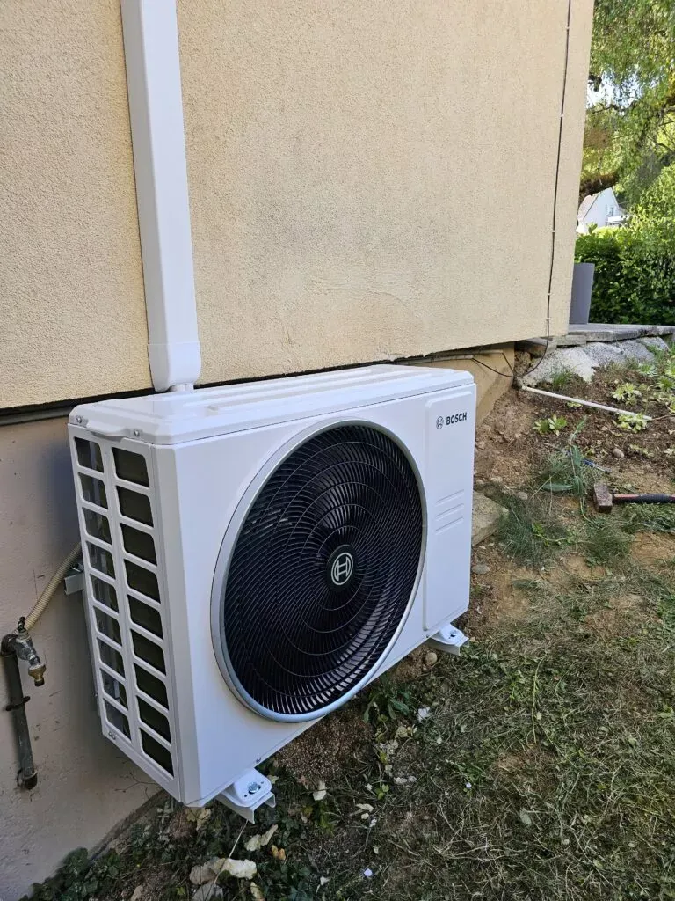
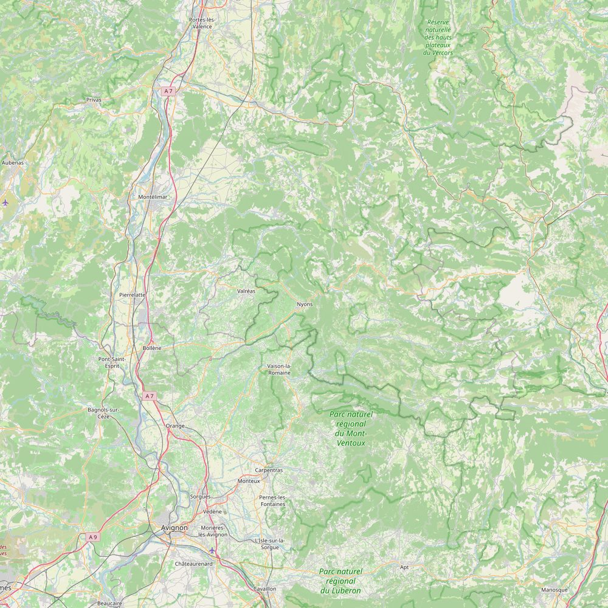

Où j'interviens
Basé à Nyons, j'interviens dans un rayon de 53 kilomètres.
Nyons est au centre de la carte ci-dessous. Le cercle jaune marque la limite des 53 kilomètres, ce qui couvre quatre départements : la Drôme, le Vaucluse, l'Ardèche et le Gard.

Comment lire la carte. Les cercles en pointillés marquent 20 et 40 km. En pratique, plus vous êtes proche, plus je suis réactif : sur les vingt premiers kilomètres je peux souvent passer dans la journée, tandis qu'aux confins de la zone je regroupe plutôt les interventions ou je me déplace pour des chantiers de plusieurs jours.
Mes secteurs de proximité
C'est ici que se fait l'essentiel de mon travail : les villages autour de Nyons, Vaison-la-Romaine, Valréas, Buis-les-Baronnies et Rémuzat. 123 communes au total, listées ci-dessous secteur par secteur.
Autour de Nyons 15 communes · ma base
- Nyons
- Châteauneuf-de-Bordette
- Aubres
- Venterol
- Les Pilles
- Mirabel-aux-Baronnies
- Montaulieu
- Condorcet
- Bénivay-Ollon
- Piégon
- Vinsobres
- Curnier
- Teyssières
- Valouse
- Montjoux
Autour de Vaison-la-Romaine 32 communes · ~20 min — voir la page Vaison-la-Romaine
- Vaison-la-Romaine
- Saint-Marcellin-lès-Vaison
- Saint-Romain-en-Viennois
- Crestet
- Séguret
- Roaix
- Entrechaux
- Faucon
- Villedieu
- Puyméras
- Buisson
- Rasteau
- Suzette
- Mérindol-les-Oliviers
- Sablet
- Saint-Maurice-sur-Eygues
- Malaucène
- Le Barroux
- Saint-Roman-de-Malegarde
- Gigondas
- Lafare
- La Roque-Alric
- Cairanne
- Tulette
- Violès
- Vacqueyras
- Beaumes-de-Venise
- Saint-Hippolyte-le-Graveyron
- Sainte-Cécile-les-Vignes
- Travaillan
- Caromb
- Crillon-le-Brave
Autour de Valréas 24 communes · ~20 min — voir la page Valréas
- Valréas
- Saint-Pantaléon-les-Vignes
- Grillon
- Montbrison-sur-Lez
- Visan
- Colonzelle
- Rousset-les-Vignes
- Richerenches
- Taulignan
- Le Pègue
- Grignan
- Chamaret
- Salles-sous-Bois
- Montségur-sur-Lauzon
- Roche-Saint-Secret-Béconne
- La Baume-de-Transit
- Chantemerle-lès-Grignan
- Bouchet
- Aleyrac
- Solérieux
- Montjoyer
- Réauville
- Clansayes
- Suze-la-Rousse
Autour de Buis-les-Baronnies 22 communes · ~30 min — voir la page Buis-les-Baronnies
- Buis-les-Baronnies
- La Penne-sur-l'Ouvèze
- Eygaliers
- Propiac
- Pierrelongue
- Beauvoisin
- La Roche-sur-le-Buis
- Rochebrune
- Vercoiran
- Bésignan
- Sainte-Jalle
- Plaisians
- Mollans-sur-Ouvèze
- Saint-Léger-du-Ventoux
- Sainte-Euphémie-sur-Ouvèze
- Le Poët-en-Percip
- Brantes
- Beaumont-du-Ventoux
- La Rochette-du-Buis
- Saint-Auban-sur-l'Ouvèze
- Aulan
- Savoillan
Autour de Rémuzat 30 communes · ~30 min — voir la page Rémuzat
- Rémuzat
- Saint-May
- Montréal-les-Sources
- Cornillon-sur-l'Oule
- Pelonne
- Verclause
- Cornillac
- Le Poët-Sigillat
- Villeperdrix
- Sahune
- Bellecombe-Tarendol
- Arpavon
- Eyroles
- Rosans
- Rottier
- Lemps
- Arnayon
- La Charce
- La Motte-Chalancon
- Pommerol
- Saint-Sauveur-Gouvernet
- Saint-Ferréol-Trente-Pas
- Chaudebonne
- Montferrand-la-Fare
- Establet
- Chalancon
- Gumiane
- Moydans
- Roussieux
- Saint-André-de-Rosans
Les 52 villes de la zone
Les communes de plus de 2 000 habitants du rayon complet, classées par département.
Drôme (26)
- Nyons
- Buis-les-Baronnies
- Tulette
- Dieulefit
- Suze-la-Rousse
- La Bégude-de-Mazenc
- Saint-Paul-Trois-Châteaux
- Donzère
- Pierrelatte
- Montélimar
- Crest
- Die
- Loriol-sur-Drôme
- Livron-sur-Drôme
Vaucluse (84)
- Valréas
- Vaison-la-Romaine
- Malaucène
- Sainte-Cécile-les-Vignes
- Beaumes-de-Venise
- Camaret-sur-Aigues
- Bollène
- Mormoiron
- Jonquières
- Mazan
- Sarrians
- Carpentras
- Orange
- Piolenc
- Courthézon
- Mondragon
- Monteux
- Bédarrides
- Pernes-les-Fontaines
- Caderousse
- Althen-des-Paluds
- Entraigues-sur-la-Sorgue
- Sorgues
- Vedène
- Le Pontet
- L'Isle-sur-la-Sorgue
- Morières-lès-Avignon
- Avignon
Ardèche (07)
- Viviers
- Bourg-Saint-Andéol
- Le Teil
- Rochemaure
- Cruas
Gard (30)
- Pont-Saint-Esprit
- Roquemaure
- Laudun-l'Ardoise
- Bagnols-sur-Cèze
- Villeneuve-lès-Avignon
Votre commune n'apparaît pas ? Cette carte n'est pas une frontière. Appelez-moi au 07 81 06 73 79 : selon la nature du chantier et mon planning, je peux tout à fait me déplacer au-delà.
Frais de déplacement
Le déplacement pour établir un devis est gratuit sur toute la zone. Pour une intervention de dépannage, les frais de déplacement sont annoncés au téléphone avant que je me mette en route — vous ne découvrez rien sur la facture.
Un projet ? Une question ?
Le premier échange ne coûte rien, et vous saurez tout de suite où vous allez.